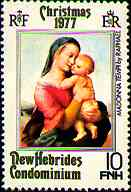
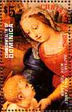
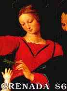
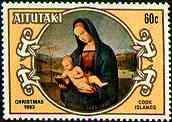
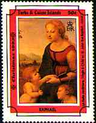
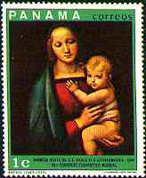
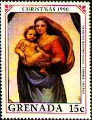
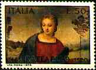
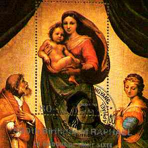
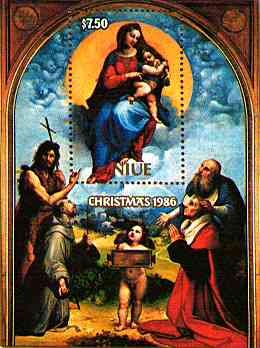

|
Created 05/03/1997. Revised:
03/19/09. Copyright © 1997 - 2009 by Victor Manta, Switzerland. All rights reserved in all countries. |
|
|
RAPHAEL MADONNA Style is the perfection
of good sense |
Roman Period
In 1508 Raphael was called to Rome by Pope Julius II and
commissioned to
execute frescoes in four small stanze, or rooms, of the Vatican Palace. The walls of the
first room, the Stanza della Segnatura (1509-1511), are decorated with scenes elaborating
ideas suggested by personifications of Theology, Philosophy, Poetry, and Justice, which
appear on the ceiling. On the wall under Theology is the Disputà, representing a group
discussing the mystery of the Trinity. The famous School of Athens, on the wall beneath
Philosophy, portrays an open architectural space in which Plato, Aristotle, and other
ancient philosophers are engaged in discourse.
After the death of Pope Julius II in 1513, and the accession of
Leo X, Raphael's influence and responsibilities increased. He was made chief architect of
St Peter's Basilica in 1514, and a year later was appointed director of all the
excavations of antiquities in and near Rome.
|
 |
 |
 |
Because of his many activities, only part of the third room of the Vatican
Palace, the Stanza del Incendio (1514-1517), was painted by him,
and he merely provided the designs for the fourth chamber, the Sala
Constantina.
|
 |
 |
 |
 |
|
 |
During this period he also designed ten tapestries illustrating the acts of Christ's apostles for the Sistine Chapel; the cartoons, or drawings, for these are now in the Victoria and Albert Museum, London. Raphael also devised the architecture and decorations of the Chigi Chapel in the Church of Santa Maria del Popolo and the decorations of the Villa Farnesina, which include the Triumph of Galatea (c. 1513).
 |
 |
In addition to these major undertakings, he executed a number of easel paintings, including a portrait of Julius II (1511-1512), a series of Madonnas, and the world-famous Sistine Madonna (c. 1514, Gemäldegalerie, Dresden). Raphael died in Rome on his 37th birthday, the April 6, 1520. (After Microsoft Encarta 1996)
Link: Sistine Madonna
|
Created 05/03/1997. Revised:
03/19/09. Copyright © 1997 - 2009 by Victor Manta, Switzerland. All rights reserved in all countries. |
|